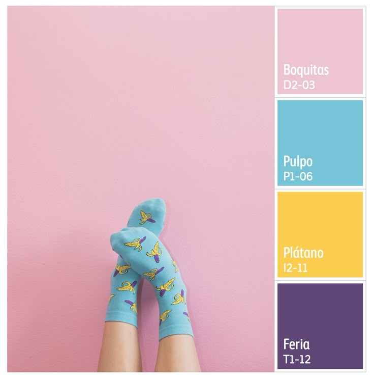

Paleta y silencio
15 Jul 2025
El color y el silencio son dos fuerzas que, cuando se equilibran, pueden transmitir emociones profundas. Este texto analiza cómo las paletas monocromáticas y los momentos sin diálogo potencian la narrativa audiovisual.
Inspirado en autores como Tarkovski o Wong Kar-Wai, el artículo explora la relación entre el espacio vacío y la densidad emocional del color.